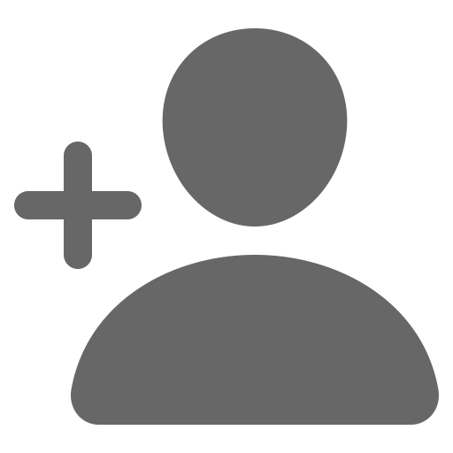

<ion-tab-bar 
  slot="bottom" 
  class="mq-tab content-icon"
>
  <ion-tab-button (click)="goRegister()" >
    
  </ion-tab-button>
  <ion-tab-button (click)="goProfile()">
    
  </ion-tab-button>
</ion-tab-bar>